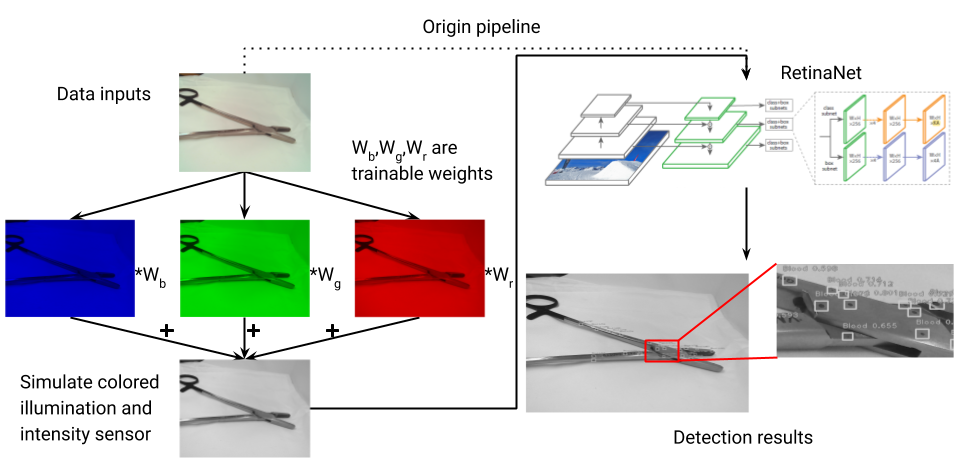

| Project Paper PDF |

|
Uncleaned tools passing the visual inspection from human auditors at Sterile Processing Department has been a concern to hospitals for years. In this paper, an innovative way of bioburden detection with the help of an automatic imaging system and machine learning algorithms is proposed. Additional to the modified RetinaNet model used in this study, physical layers are also explored, which simulates a color-changeable illumination system. Though the model with physical layer did not perform as well as the one without physical layer, the experiment still pointed out an interesting direction worth further development. |
|
|
| Paper: |
Code and Data:
|